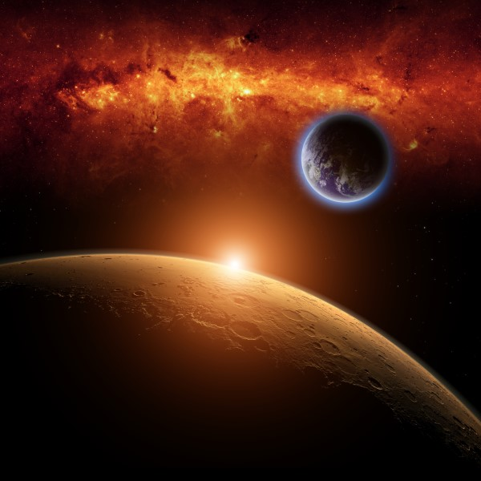

Play for Soul Speaking
Did you know?
Australia is wider than the moon
Mars has a Volcano larger than the state of hawaii
Eighty-percent of space is completely empty
Because of lower gravity, a person who weighs 220 lbs on Earth would weigh 84 lbs on Mars
There are 79 known moons orbiting Jupiter
Pluto is smaller than the United States.
There are more stars in space than there are grains of sand in the world

The End